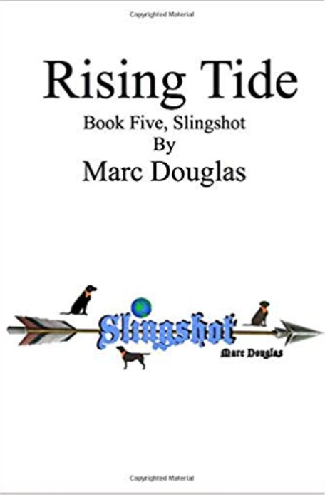

MARC DOUGLAS
Novels of Adventure, Science Fiction & Drama
SlingShot Series
Click Any Cover to Purchase
PROLOGUE: "Allow me to introduce myself. My name is Sullivan Fitzpatrick Finnegan Gravel. I am employed as a scribe on Earth Federation Star Cruiser Class 33, which is the spaceship I lived on for most of my life. It is a sleek, white, state-of-the-art spaceship designed to reach a new world to save the human race..."
 PROLOGUE: "Our society has been built on high technology but I dwell in the basement of the written word. In defiance of video and radio wave images that batter our everyday perception of reality, I focus on the intonations of the written line. I've put the history of our flight to word and this has taken eight years and..."
PROLOGUE: "Our society has been built on high technology but I dwell in the basement of the written word. In defiance of video and radio wave images that batter our everyday perception of reality, I focus on the intonations of the written line. I've put the history of our flight to word and this has taken eight years and..."
PROLOGUE: "His heart was great but even those with the most generous natures can be worn down by the relentless of time. He was a natural leader and emphathetic to others troubles even while in pain. When Leader was needed to travel to Earth, The One helped step up to lead the village. There was no gathering to..."
PROLOGUE: "Deak rose, lost in a stupor...stood with blank, red shot eyes. He hadn't shaven in a month, his eyes were swollen and clothes looked as though he'd slept in them...he had. His attitude was strangely aloof, as though he could have cared less what happened here. The judge paused to assess the man before him..."
PROLOGUE: "The River. Doesn't always run flat, occasionally bending back. Rocks will lift it high in the air, yet in the end, its the rocks worn bare. On the water, time has a different feel. Moving and yet standing still. The water isn't confused, only your sentiments that are abused..."
Soon Series
Click Any Cover to Purchase
PROLOGUE: "Josh was scared, the type of fear you feel deep down inside. An anxious, grinding kind of sensation that flips your stomach, transforms your legs into rubber and leaves you twisted in knots..."
PROLOGUE: "As she made her way to Matt, arm in arm with Jake, every eye in the room focused on Rachel. She was exquisite. The pause in conversation was palpable as she made her way regally through the room..."
PROLOGUE: "Sadie desperately needed some small token of confirmation that she might survive this night. This broken down cabin, the woods and night were all threatening and malevolent. The ruined shack seemed to..."